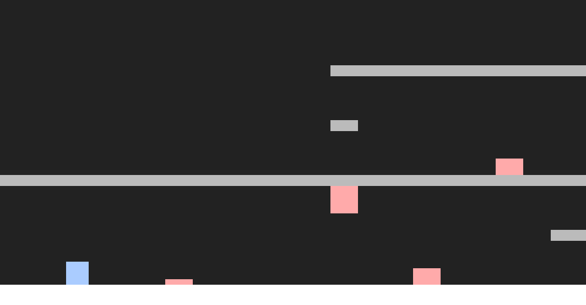

Selamat datang di halaman website saya!
My name is Stanley. I was born in Medan, Indonesia, on the 9th of November, 2006. My dream job is working as a game developer or software engineer, but I also partake in music production, mostly electronic music, as a side hobby.
Ralsei is a Darkner protagonist in the 2018 video game Deltarune. He serves as the player's main guide and is the only Darkner in the main trio of Deltarune. Having originated from a fountain of pure darkness, he can travel anywhere in the Dark World unlike most Darkners. His personality is often described as quite shy and soft, while some think of him as suspicious or secretly malevolent especially after the events of Chapter 2. His weapons of choice are scarf-type weapons, and he has 70 HP in Chapter 1 and 100 HP in Chapter 2.
Riwayat Pendidikan
- 2012-2018 SD Bangun Insan Mandiri
- 2018-2021 SMP Bangun Insan Mandiri
- 2021-2024 SMA Bangun Insan Mandiri
- 2024-2028 Institut Teknologi Bandung
Projects

Game
Game 2D platformer sederhana yang kami buat untuk CISPRO IT Bangun Insan Mandiri
Lihat Detail